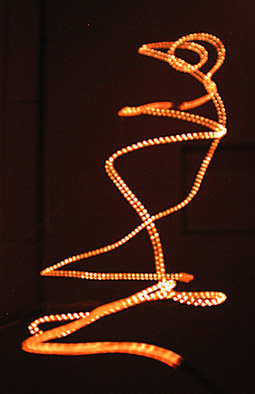
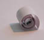

|  |
.......................... WURMLÖCHER
Das Wurmloch ist ein sozio-kulturelles Ereignis, das an bestimmten Orten und Zeitpunkten von SHIFZ eröffnet wird.
Um das Kollabieren des Wurmlochs beim Eintritt von Personen zu verhindern, werden diese mit einem eigens entwickelten Casimir-Effektor in exotische Materie verwandelt. Darüber hinaus wird das Wurmloch von negativer Energie gespeist, die im Innern von einem Geisterstrahlungs-Kollektor gesammelt wird.
Funktionell aufgebaut, featured das SHIFZ-Wurmloch im Eintrittsbereich eine RaumBar, die den Reisenden mit einem stärkenden HyperraumDrink empfängt. Ein Informationsterminal bereitet den Weltraumneuling auf den Weg in unbekannte Regionen des Universums vor. Diese können durch eingerollte PUNKTSINGULARITÄTEN
(Anagramme zum aktuellen Eintrittsort) erlebt werden.
Der Austritt aus dem Wurmloch führt in individuelle Multiversen, die aufgrund der Eintrittsstruktur der exotischen Materie berechnet und von der Exit-Engine generiert werden...

|